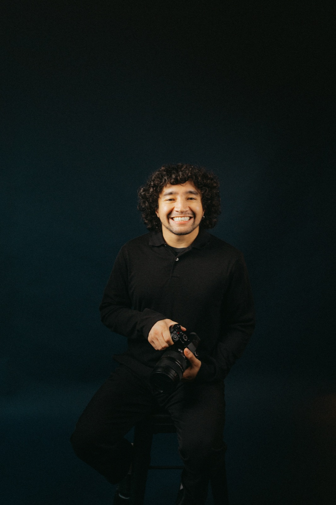
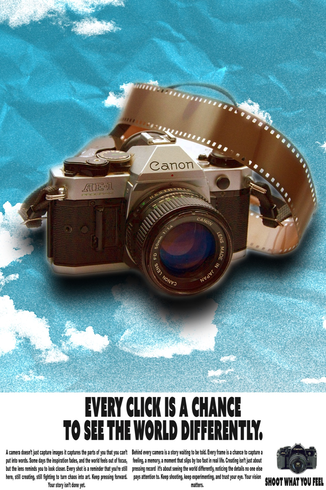
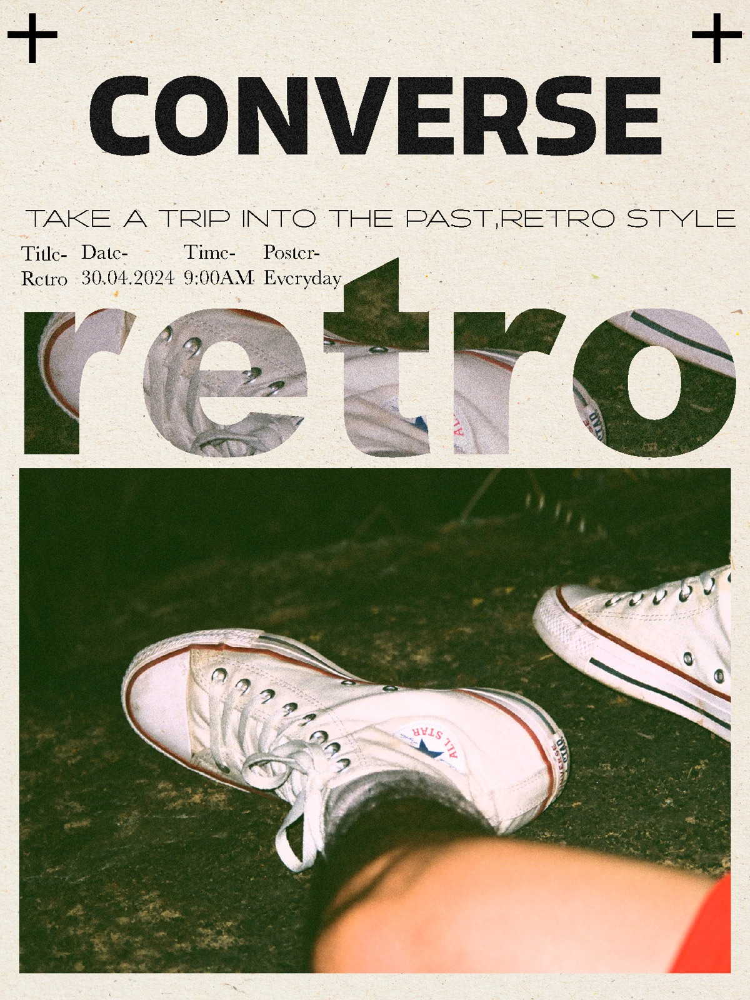

Danian Martin is a Fresno-based designer and photographer working across brand identity, motion, film, and portraiture. One person, one throughline: images with a point of view, built to work as a system.
The practice covers logo and poster design, motion graphics and short-form video, and editorial and street photography — commissions open across the Central Valley and beyond.
Where the design starts moving. Motion graphics, title treatments, and short-form edits cut for how people actually watch.
One or two sentences on what it was for and the idea behind it.
One or two sentences on what it was for and the idea behind it.
Marks, posters, and printed matter. Identity work built to survive being shrunk, stamped, and put on the side of something.

PosterStudio poster design.

DesignAd concept design.
Street, portrait, and place. The largest body of work in the studio, and the one that teaches everything else how to look.
Studio portrait session.
Neon signage series.
Editorial portraiture.
Images with a point of view, built to work as a system.
Logo, wordmark, colour, type, and a usage sheet so it stays consistent after handoff.
Animated logo builds, kinetic type, social cutdowns, and short-form edits.
Editorial and personal-brand portraiture, shot on location or in studio.
Campaign posters, event collateral, and print-ready artwork.
Taking on brand, portrait, and motion commissions for 2026. Tell me what you're building and roughly when you need it — I'll come back with an approach and a number.